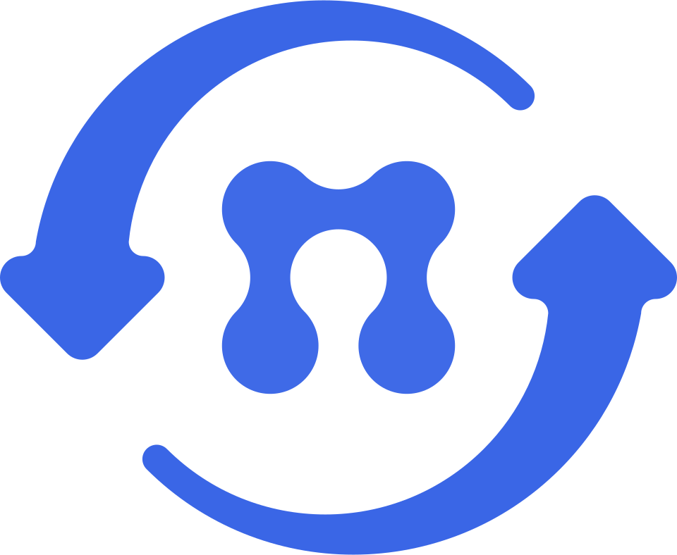
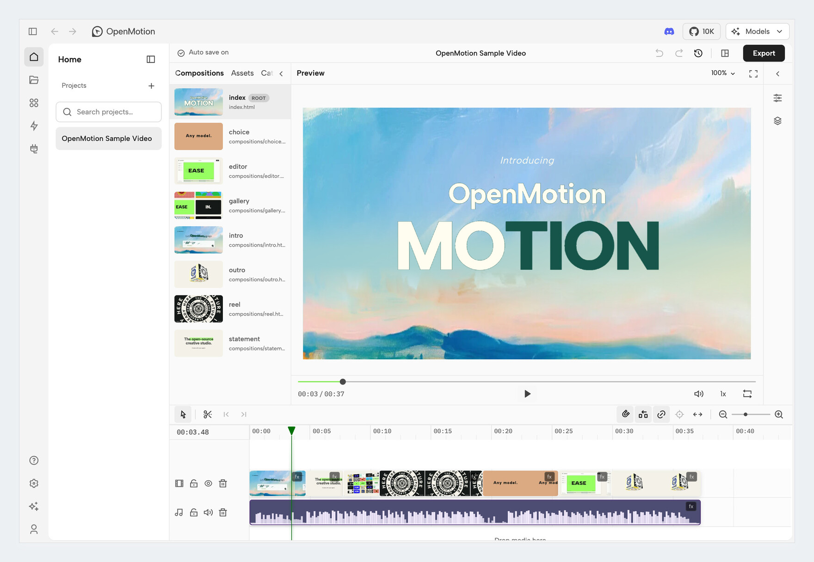
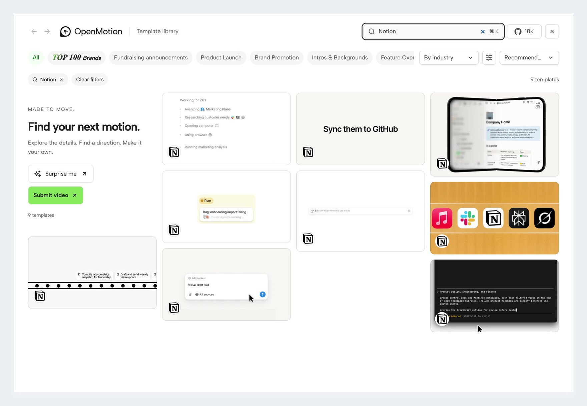
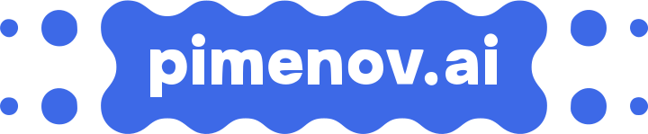

Webflow
Проход камеры через объёмное пространство из веб-страниц.

Перезагрузка Сергей Пименов / 22 ноября 2026Codex собирает сцены через MCP. В Studio ты видишь тот же проект и можешь менять его. Готовые примеры можно посмотреть здесь. Для редактирования понадобится своя установка OpenMotion.
Слева открываются исходные HTML-композиции. Каждая отвечает за свой кусок видео.

В библиотеке есть полные проекты и ролики, разобранные по кадрам.
Открываем карточку и смотрим начало, переходы и то, можно ли открыть исходник.

Посмотрим, как устроено движение. На следующем слайде — наши версии.
Проход камеры через объёмное пространство из веб-страниц.
Крупный план, свет и переход от фактуры к устройствам.
Вертикальный клип, где рисунки меняются под ритм музыки.
Те же три шаблона, в том же порядке.
Страницы сайта складываются из объёмных слоёв.
5 332 405 просмотров в Facebook за 28 дней и другие цифры из медиакита.
Заставка Telegram-канала Сергея Пименова.
Faceless Video
Из статьи о 3D-пролёте над Ростовом сделали историю с закадровым голосом.
«Мне хотелось снять Ростов с воды».
Growth Teardown
Шесть событий продукта на одной линии времени с опубликованными цифрами компании.
motionmaxxing
В новом начале заголовок статьи входит в настоящую страницу pimenov.ai на ударе музыки.

Три рилса из записи 15 ноября с оригинальным голосом.
Тема для нового проекта: зачем приносить свой вопрос в «Перезагрузку».
Открыть исходную страницу ↗